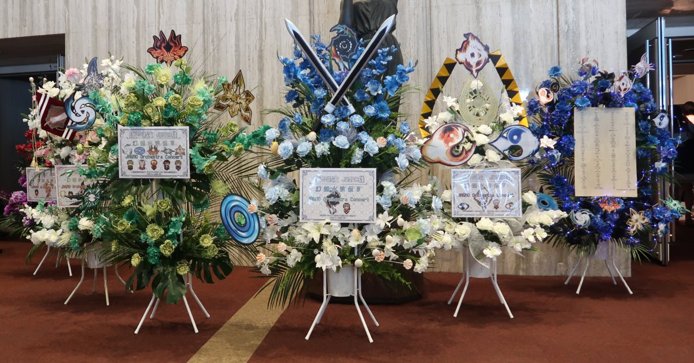
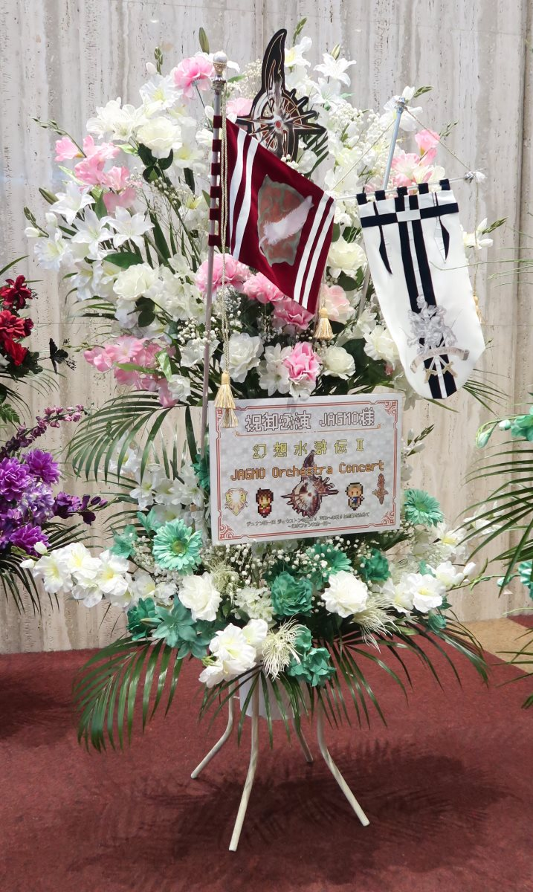
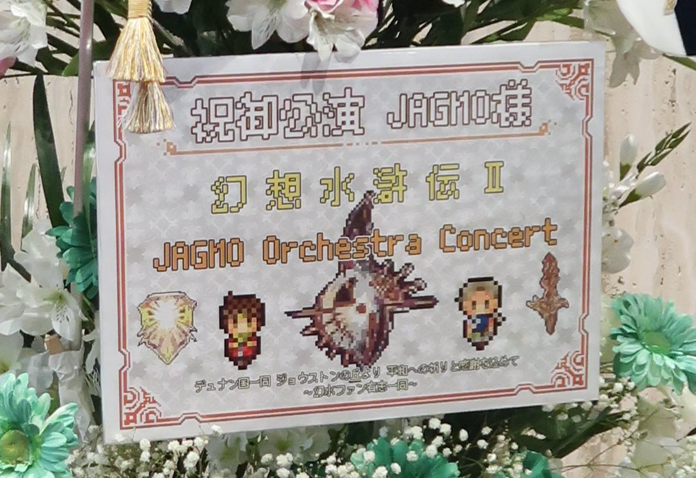
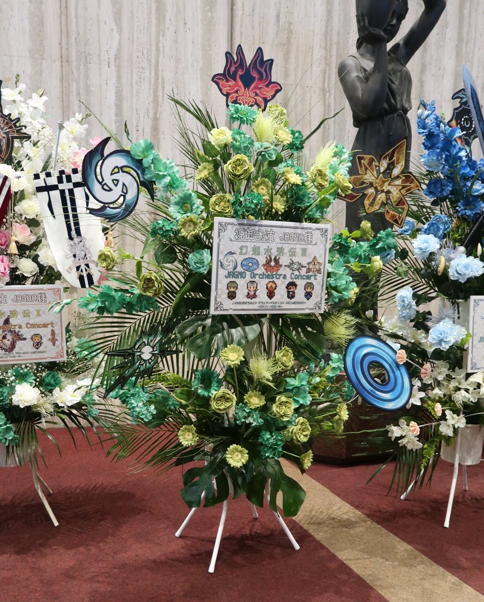
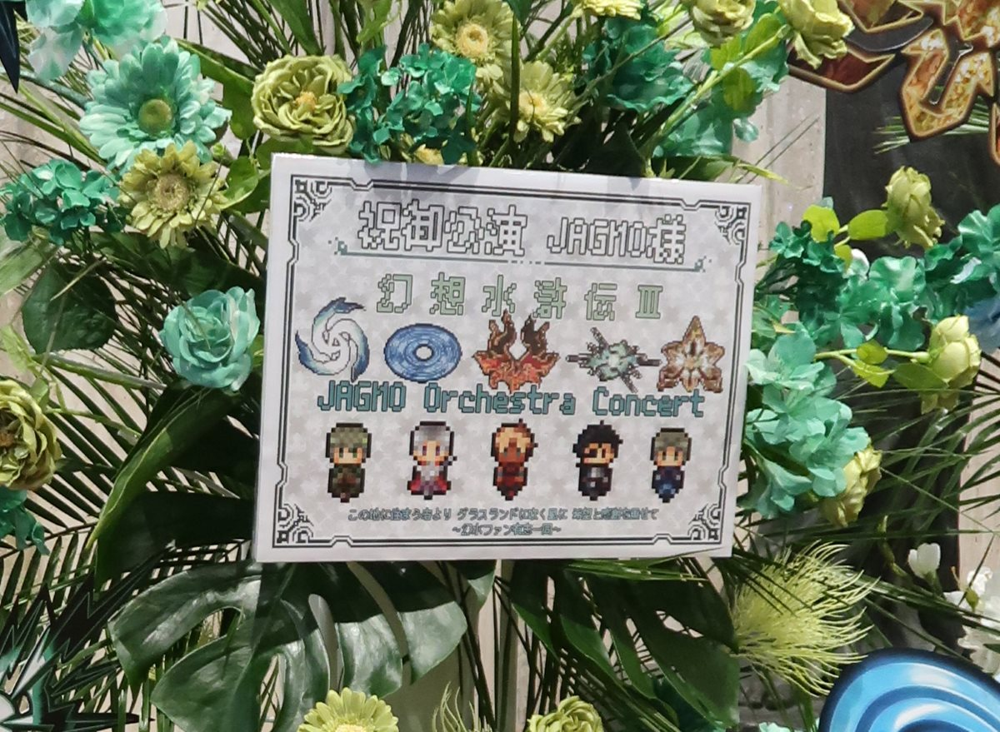
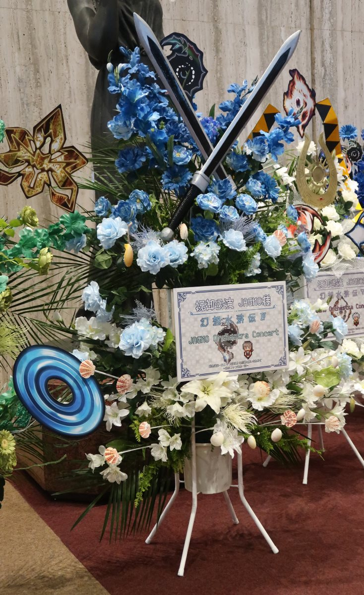
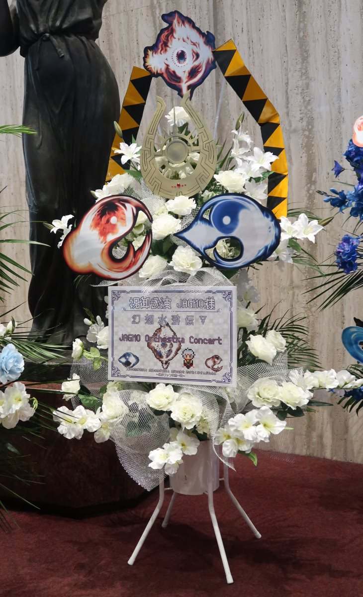
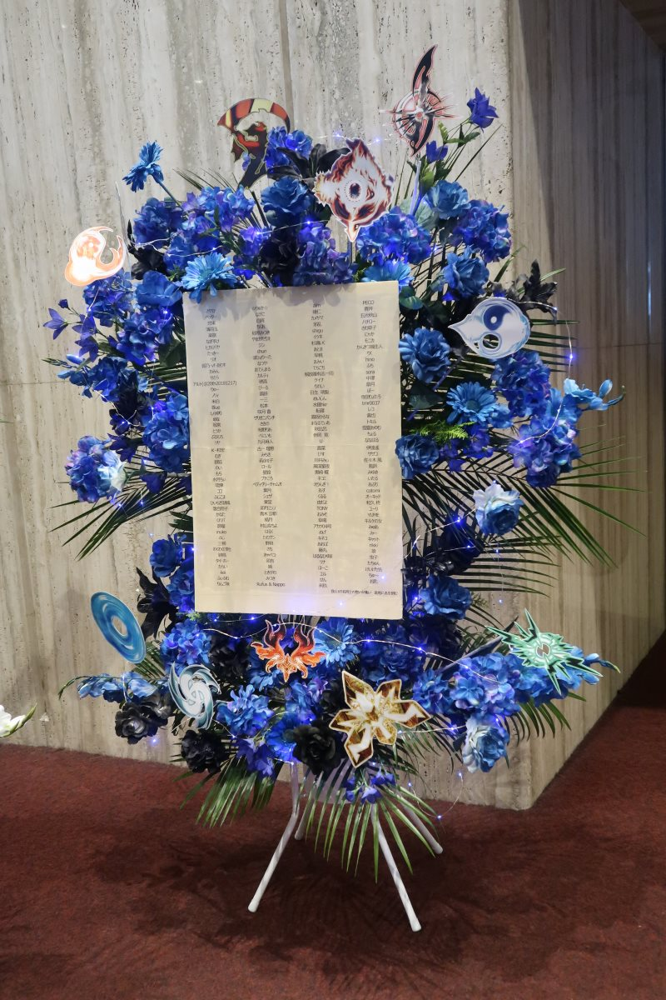
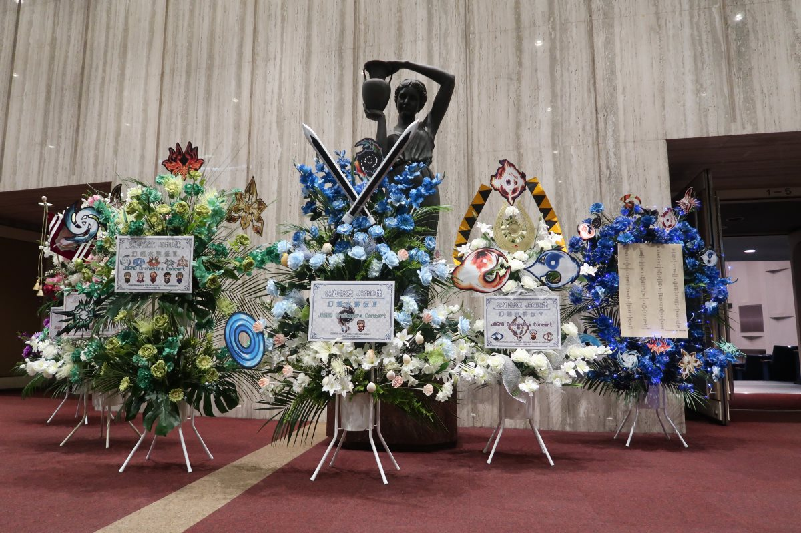

企画ツイート (by @sayaka_mo_magic)
★8月25・26日開催『幻想水滸伝 × JAGMO Orchestra Concert』フラスタ企画
— さやか@幻水オケ＊フラスタ企画 (@sayaka_mo_magic) 2018年6月24日
公演当日、ロビーに飾るお花⁽フラワースタンド⁾を、ファン一同で、お贈りする企画。当日の参加等は問わず参加可能！ #幻水オケ #幻水フラスタ★受付期間：2018/6/24(日)19 :00～2018/7/7(土) 23:59https://t.co/082qGGCnqG pic.twitter.com/D5DGyIVduW
【ご報告】
— さやか@幻水オケ＊フラスタ企画 (@sayaka_mo_magic) 2018年8月14日
幻水フラスタ企画 作業完了しました！！！
187名の多くの賛同者様、そして企画協力者様、本当に！！！ありがとうございました！心からの感謝を！！！
このフラスタ企画が、幻水愛に溢れた二日間に花を添えられたら、最高に嬉しいです！！ #幻水フラスタ #幻水オケ pic.twitter.com/Be3C7u3a8q
この度は『幻想水滸伝 × JAGMO Orchestra Concert』の開催おめでとうございます！！！
— さやか@幻水オケ＊フラスタ企画 (@sayaka_mo_magic) 2018年8月25日
187名から心からの感謝と幻水への愛を込めて6基のフラスタをお贈りします！
ナンバリングという夢のコンサート、本当に本当にありがとうございます！
素晴らしい二日間になりますように！#幻水フラスタ #幻水オケ pic.twitter.com/kuzURWARCJ
Powered by Stars of Destiny